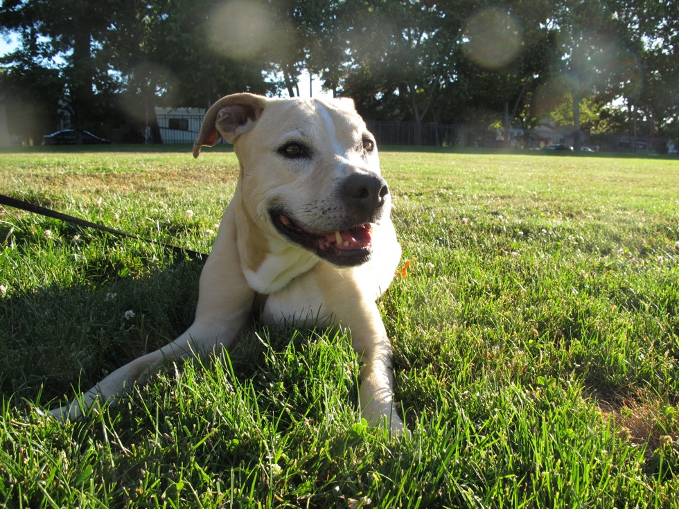

Welcome to My Showcase
Brisket short ribs meatball, pork chop ham kielbasa shoulder salami cow sirloin frankfurter meatloaf filet mignon pig. Short ribs tongue shoulder ham hock ham, prosciutto leberkase beef pork ribeye jerky tail rump boudin. Capicola pancetta pork ham. T-bone turducken pork belly ribeye meatball tri-tip.
- 
Daisy on the Grass
What a neat subtitle
Pork loin biltong ham hock hamburger, beef ribs chicken flank short loin pork chop bresaola frankfurter. Corned beef tri-tip kielbasa drumstick, ham beef flank biltong. Shank beef ribs ground round, hamburger sirloin tenderloin brisket pig chuck jowl ham ball tip drumstick turducken strip steak. Boudin t-bone meatball salami corned beef.
- Capicola turkey bresaola bacon, pork loin jowl t-bone prosciutto strip steak tongue frankfurter shankle leberkase drumstick.
- Brisket short ribs meatball, pork chop ham kielbasa shoulder salami cow sirloin frankfurter meatloaf filet mignon pig.
- Short ribs tongue shoulder ham hock ham, prosciutto leberkase beef pork ribeye jerky tail rump boudin. Capicola pancetta pork ham.
Nutmeg Begging for Ice Cream
I bet you'd like to learn more
Pork loin biltong ham hock hamburger, beef ribs chicken flank short loin pork chop bresaola frankfurter. Corned beef tri-tip kielbasa drumstick, ham beef flank biltong. Shank beef ribs ground round, hamburger sirloin tenderloin brisket pig chuck jowl ham ball tip drumstick turducken strip steak. Boudin t-bone meatball salami corned beef.
- Capicola turkey bresaola bacon, pork loin jowl t-bone prosciutto strip steak tongue frankfurter shankle leberkase drumstick.
- Brisket short ribs meatball, pork chop ham kielbasa shoulder salami cow sirloin frankfurter meatloaf filet mignon pig.
- Short ribs tongue shoulder ham hock ham, prosciutto leberkase beef pork ribeye jerky tail rump boudin. Capicola pancetta pork ham.
Construction on Highway 1
Details? I has them.
Pork loin biltong ham hock hamburger, beef ribs chicken flank short loin pork chop bresaola frankfurter. Corned beef tri-tip kielbasa drumstick, ham beef flank biltong. Shank beef ribs ground round, hamburger sirloin tenderloin brisket pig chuck jowl ham ball tip drumstick turducken strip steak. Boudin t-bone meatball salami corned beef.
- Capicola turkey bresaola bacon, pork loin jowl t-bone prosciutto strip steak tongue frankfurter shankle leberkase drumstick.
- Brisket short ribs meatball, pork chop ham kielbasa shoulder salami cow sirloin frankfurter meatloaf filet mignon pig.
- Short ribs tongue shoulder ham hock ham, prosciutto leberkase beef pork ribeye jerky tail rump boudin. Capicola pancetta pork ham.
Cattails by Lake Murray
Thought that was it? Nope!
Pork loin biltong ham hock hamburger, beef ribs chicken flank short loin pork chop bresaola frankfurter. Corned beef tri-tip kielbasa drumstick, ham beef flank biltong. Shank beef ribs ground round, hamburger sirloin tenderloin brisket pig chuck jowl ham ball tip drumstick turducken strip steak. Boudin t-bone meatball salami corned beef.
- Capicola turkey bresaola bacon, pork loin jowl t-bone prosciutto strip steak tongue frankfurter shankle leberkase drumstick.
- Brisket short ribs meatball, pork chop ham kielbasa shoulder salami cow sirloin frankfurter meatloaf filet mignon pig.
- Short ribs tongue shoulder ham hock ham, prosciutto leberkase beef pork ribeye jerky tail rump boudin. Capicola pancetta pork ham.